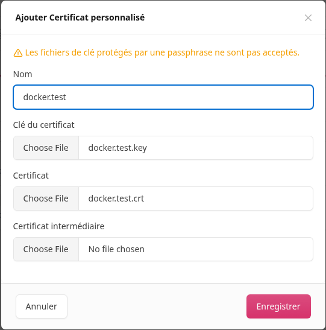
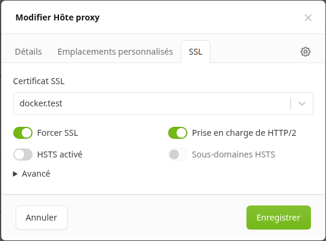
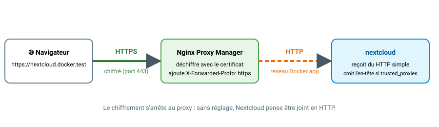
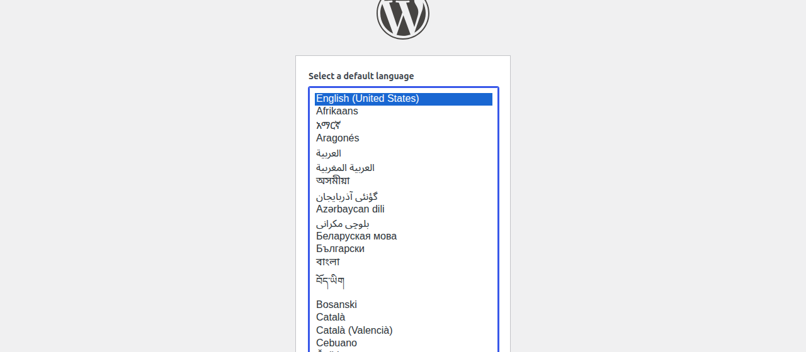

Nextcloud en HTTPS derrière le reverse proxy¶
Résumé
Ce TP assemble tout ce qui précède : un Nextcloud décrit en Docker Compose, qui ne publie aucun port, est rendu accessible par Nginx Proxy Manager sous le nom nextcloud.docker.test. On le passe ensuite en HTTPS avec un certificat autosigné fabriqué avec openssl, et l'on apprend à Nextcloud qu'il est derrière un proxy, pour qu'il construise ses liens en https://.
En exercice, on publie de la même façon un WordPress avec sa base de données. À la fin, deux applications tournent derrière un seul point d'entrée, chiffré.
| Propriété | Valeur |
|---|---|
| Difficulté | Intermédiaire |
| Durée estimée | 2 h |
| Version décrite | Nextcloud 35.0.3, MariaDB 11.8, Nginx Proxy Manager 2.17.1, OpenSSL 3.5 |
| Place dans le parcours | Partie 10 sur 17 du parcours Docker — jour 3 |
| Dernière mise à jour | 2026-11-24 |
Convention de lecture
🖥️ PC hôte · 🐧 VM docker-hote, connecté en tssr · 🌐 navigateur du PC · ✍️ exercice · 🛟 instantané. Suite de la partie 9 : NPM et Portainer tournent, et le fichier hosts du PC contient nextcloud.docker.test et wordpress.docker.test.
1. Le fichier Compose de Nextcloud derrière un proxy¶
On repart d'un nouveau projet, dans son propre dossier, pour ne pas mélanger avec le Nextcloud de la partie 8.
Libérer de la place
Le Nextcloud de la partie 8 n'est plus utile. Pour récupérer environ 300 Mo sur le disque de la VM, supprimer ses volumes : cd ~/nextcloud && docker compose down -v.
-
🐧 Créer le dossier et le fichier :
services: redis: image: redis:alpine container_name: nextcloud-redis restart: always networks: - redis expose: - 6379 mariadb: image: mariadb:11.8 container_name: nextcloud-mariadb command: --transaction-isolation=READ-COMMITTED --binlog-format=ROW restart: always volumes: - mariadb:/var/lib/mysql networks: - mariadb environment: - MYSQL_DATABASE=nextcloud - MYSQL_USER=nextcloud - MYSQL_ROOT_PASSWORD=TutoDocker2026! - MYSQL_PASSWORD=TutoDocker2026! expose: - 3306 healthcheck: test: ["CMD", "healthcheck.sh", "--connect", "--innodb_initialized"] interval: 10s timeout: 5s retries: 5 start_period: 30s nextcloud: image: nextcloud:apache container_name: nextcloud restart: always volumes: - app:/var/www/html networks: - redis - mariadb - app environment: - REDIS_HOST=redis - MYSQL_HOST=mariadb - MYSQL_DATABASE=nextcloud - MYSQL_USER=nextcloud - MYSQL_PASSWORD=TutoDocker2026! depends_on: mariadb: condition: service_healthy volumes: mariadb: app: networks: mariadb: redis: app:
Les différences avec la partie 8 :
| Ligne | Explication |
|---|---|
Aucun ports: |
Nextcloud ne publie plus rien : seul le proxy le joindra |
Volumes mariadb et app |
La base de données et les fichiers de Nextcloud (le volume app n'a rien à voir avec le réseau du même nom) |
container_name: nextcloud |
Un nom fixe et court pour le conteneur (au lieu de nextcloud-proxy-nextcloud-1), plus pratique à indiquer dans NPM |
Réseau app |
Un réseau réservé à la liaison entre Nextcloud et le proxy |
MYSQL_HOST=mariadb |
Le service de base de données s'appelle maintenant mariadb |
REDIS_HOST=redis |
redis est le nom du service : il reste valable même si le conteneur s'appelle nextcloud-redis |
-
🐧 Lancer le projet :
nextcloud Up Less than a second 80/tcp nextcloud-mariadb Up 16 seconds (healthy) 3306/tcp nextcloud-redis Up 16 seconds 6379/tcpAucune flèche dans la colonne des ports : rien n'est publié.
2. Brancher le proxy et créer l'hôte¶
-
🐧 Les réseaux du projet portent le préfixe
nextcloud-proxy_(le nom du dossier). Brancher NPM sur le réseauapp:docker network ls --filter name=nextcloud-proxy docker network connect nextcloud-proxy_app npm-app-1NETWORK ID NAME DRIVER SCOPE c3e2c0eb3d4d nextcloud-proxy_app bridge local d228d6be6161 nextcloud-proxy_mariadb bridge local 66d095acc251 nextcloud-proxy_redis bridge localNPM rejoint Nextcloud par
app, mais n'a aucun accès à la base de données ni à Redis : ils sont sur d'autres réseaux. Comme en partie 9, rendre ce branchement durable en ajoutantnextcloud-proxy_appà la listenetworks:du serviceappde~/npm/docker-compose.yml, etnextcloud-proxy_app: external: trueà la sectionnetworks:de fin de fichier, puiscd ~/npm && docker compose up -d. -
🌐 Dans NPM, Ajouter Hôte proxy :
Champ Valeur Noms de domaine nextcloud.docker.testSchéma httpNom d'hôte / IP de destination nextcloudPort de destination 80Bloquer les exploits courants Activé Prise en charge de WebSockets Activé (utilisé par certaines applications de Nextcloud) Laisser l'onglet SSL tel quel pour l'instant, et Enregistrer.
-
🌐 Ouvrir
http://nextcloud.docker.test: l'assistant d'installation s'affiche. Créer le compteadmin/TutoDocker2026!comme en partie 8, puis Installer (environ une minute).
Le nom de domaine retenu par Nextcloud
Pendant l'installation, Nextcloud enregistre le nom par lequel on l'a joint comme domaine de confiance (trusted domain). On le vérifie avec occ :
Ouvert par un autre nom (son adresse IP, par exemple), Nextcloud refuserait avec le message Accès par un domaine non approuvé. Pour ajouter un nom : docker exec -u www-data nextcloud php occ config:system:set trusted_domains 1 --value=autre.nom.
3. Passer en HTTPS avec un certificat autosigné¶
3.1 Pourquoi un certificat autosigné ?¶
Un certificat prouve au navigateur l'identité du site et permet de chiffrer la connexion. Sur Internet, on le demande gratuitement à Let's Encrypt, que NPM sait interroger tout seul (Certificats > Ajouter > Let's Encrypt). Mais Let's Encrypt doit vérifier qu'on contrôle le nom de domaine, depuis Internet : impossible pour un nom fictif comme nextcloud.docker.test.
Dans un lab, on fabrique donc soi-même un certificat autosigné : il chiffre la connexion aussi bien, mais aucune autorité reconnue ne l'a signé. Le navigateur affichera une alerte, ce qui est normal. Ce n'est pas adapté à la production.
3.2 Générer le certificat avec openssl¶
Un même certificat peut être valable pour plusieurs noms : on en fabrique un seul pour les trois services du jour 3 (Nextcloud, Portainer et WordPress).
🐧 Créer un dossier et le certificat (une seule commande, sur plusieurs lignes) :
mkdir ~/certs && cd ~/certs
openssl req -x509 -nodes -days 365 -newkey rsa:2048 \
-keyout docker.test.key \
-out docker.test.crt \
-subj "/C=FR/ST=France/L=Paris/O=Lab Docker/CN=docker.test" \
-addext "subjectAltName=DNS:nextcloud.docker.test,DNS:portainer.docker.test,DNS:wordpress.docker.test"
| Option | Explication |
|---|---|
req -x509 |
Fabriquer directement un certificat signé par lui-même (au lieu d'une simple demande à envoyer à une autorité) |
-nodes |
Ne pas chiffrer la clé privée par un mot de passe (sinon il faudrait le taper à chaque démarrage du proxy) |
-days 365 |
Valable un an |
-newkey rsa:2048 |
Créer en même temps une nouvelle clé RSA de 2048 bits |
-keyout, -out |
Les fichiers produits : la clé privée (secrète) et le certificat (public) |
-subj "…/CN=docker.test" |
L'identité inscrite dans le certificat ; CN est son nom principal |
-addext "subjectAltName=DNS:…,DNS:…" |
Les noms pour lesquels le certificat est valable, séparés par des virgules. Indispensable : les navigateurs récents ne regardent plus le CN, seulement ce champ |
🐧 Vérifier :
-rw-rw-r-- 1 tssr tssr 1411 24 nov. 08:31 docker.test.crt
-rw------- 1 tssr tssr 1704 24 nov. 08:31 docker.test.key
subject=C=FR, ST=France, L=Paris, O=Lab Docker, CN=docker.test
notAfter=Nov 24 07:31:21 2027 GMT
X509v3 Subject Alternative Name:
DNS:nextcloud.docker.test, DNS:portainer.docker.test, DNS:wordpress.docker.test
La clé privée n'est lisible que par tssr (-rw-------) : elle ne doit jamais être partagée.
3.3 Copier les fichiers sur le PC¶
NPM importe les certificats en envoyant des fichiers depuis le navigateur : il faut donc les avoir sur le PC.
🖥️ Dans PowerShell, copier les deux fichiers de la VM vers le dossier courant du PC :
Les fichiers arrivent dans le dossier personnel de Windows (C:\Users\<nom>). Après l'import dans NPM, supprimer la clé privée du PC : Remove-Item .\docker.test.key.
3.4 Importer le certificat dans NPM¶
- 🌐 Dans NPM, Certificats, Ajouter, puis Certificat personnalisé.
-
🌐 Remplir :
Champ Valeur Nom docker.testClé du certificat le fichier docker.test.keyCertificat le fichier docker.test.crtCertificat intermédiaire vide (inutile pour un certificat autosigné) 
Le certificat et sa clé, envoyés depuis le PC.
-
🌐 Enregistrer : le certificat apparaît dans la liste, Non utilisé pour l'instant, avec sa date d'expiration.
3.5 Activer HTTPS sur l'hôte Nextcloud¶
- 🌐 Hôtes > Hôtes proxy, menu ⋮ au bout de la ligne
nextcloud.docker.test, Modifier, onglet SSL. -
🌐 Choisir le certificat
docker.test, puis activer :- Forcer SSL : toute visite en
http://est redirigée vershttps://; - Prise en charge de HTTP/2 : une version plus rapide du protocole HTTP.

Le certificat associé à l'hôte, HTTPS forcé.
- Forcer SSL : toute visite en
-
🌐 Enregistrer.
- 🌐 Faire de même pour l'hôte
portainer.docker.test(partie 9) : Portainer devient joignable enhttps://portainer.docker.test, et son mot de passe ne circule plus en clair.
Ne pas activer HSTS dans un lab
L'option HSTS demande au navigateur de ne plus jamais accepter ce site autrement qu'en HTTPS valide, pendant des mois. Avec un certificat autosigné, on risque de ne plus pouvoir ouvrir le site du tout dans ce navigateur. HSTS est une bonne pratique en production, avec un vrai certificat.
3.6 Tester¶
-
🐧 Depuis la VM, vérifier la redirection et le HTTPS (l'option
-kaccepte le certificat autosigné,--resolveremplace le fichierhosts) :curl -s -o /dev/null -w '%{http_code} %{redirect_url}\n' --resolve nextcloud.docker.test:80:127.0.0.1 http://nextcloud.docker.test/ curl -sk -o /dev/null -w '%{http_code} HTTP/%{http_version}\n' --resolve nextcloud.docker.test:443:127.0.0.1 https://nextcloud.docker.test/status.phpLa visite en HTTP est redirigée (code 301) vers HTTPS, qui répond en HTTP/2.
-
🌐 Ouvrir
https://nextcloud.docker.test. Le navigateur affiche une alerte de sécurité (« Votre connexion n'est pas privée », codeNET::ERR_CERT_AUTHORITY_INVALID) : il ne connaît pas l'autorité qui a signé le certificat, puisque c'est… le certificat lui-même. Dans un lab maîtrisé, on passe outre :- Chrome ou Edge : Paramètres avancés, puis Continuer vers le site ;
- Firefox : Avancé, puis Accepter le risque et poursuivre.
Un clic sur le cadenas (ou sur Non sécurisé) de la barre d'adresse permet d'afficher le certificat : on y retrouve
Lab Dockeret la date d'expiration.
Faire confiance au certificat sur le PC
Pour ne plus voir l'alerte, on peut ajouter le certificat aux autorités de confiance du PC. 🖥️ Sous Windows : double-cliquer sur docker.test.crt, Installer le certificat…, Utilisateur actuel, Placer tous les certificats dans le magasin suivant, Parcourir…, Autorités de certification racines de confiance, puis Terminer ; Windows demande une confirmation (Oui). Redémarrer le navigateur. Pour le retirer à la fin du parcours : certmgr.msc, Autorités de certification racines de confiance > Certificats, supprimer docker.test. Firefox utilise son propre magasin : Paramètres > Vie privée et sécurité > Certificats > Afficher les certificats > Autorités > Importer. À ne faire que pour un certificat de son propre lab : une autorité de confiance peut usurper n'importe quel site.
4. Dire à Nextcloud qu'il est derrière un proxy HTTPS¶
🌐 Se connecter à Nextcloud, puis ouvrir Paramètres d'administration > Vue d'ensemble (menu de l'avatar en haut à droite). Nextcloud signale une erreur :
Accès HTTPS et URL
Vous accédez au site de manière non sécurisée via HTTP. Il est fortement recommandé de configurer votre serveur pour exiger HTTPS.
Pourtant, le navigateur est bien en HTTPS ! C'est le piège classique du reverse proxy : le chiffrement s'arrête au proxy. Entre NPM et Nextcloud, sur le réseau Docker app, la requête circule en HTTP simple. Nextcloud ne voit donc que du HTTP, et risque de fabriquer des liens en http://.

Le HTTPS s'arrête au proxy : Nextcloud doit le savoir.
Le proxy ajoute à chaque requête des en-têtes qui racontent ce qui s'est passé avant lui (X-Forwarded-Proto: https, X-Forwarded-For: adresse du PC). Mais Nextcloud ne les croit que s'ils viennent d'un proxy de confiance : sinon, n'importe qui pourrait les inventer. L'image Nextcloud lit pour cela trois variables d'environnement.
-
🐧 Dans
~/nextcloud-proxy/docker-compose.yml, ajouter au blocenvironmentdu servicenextcloud:- TRUSTED_PROXIES=172.16.0.0/12 - OVERWRITEPROTOCOL=https - OVERWRITECLIURL=https://nextcloud.docker.testVariable Rôle TRUSTED_PROXIES=172.16.0.0/12Faire confiance aux en-têtes envoyés par une adresse de cette plage, celle où Docker choisit ses réseaux ( 172.16.0.0à172.31.255.255)OVERWRITEPROTOCOL=httpsToujours fabriquer des liens en https://OVERWRITECLIURL=https://…L'adresse publique, utilisée par les tâches en ligne de commande (notifications, courriels…) -
🐧 Appliquer : Compose recrée seulement le conteneur
nextcloud; les données sont dans les volumes. -
🌐 Recharger Vue d'ensemble : l'erreur Accès HTTPS et URL a disparu. Les autres avertissements (fenêtre de maintenance, types MIME, répertoire de données…) concernent le réglage fin de Nextcloud et peuvent être ignorés dans ce lab.
Pourquoi une plage aussi large ?
L'adresse de NPM sur le réseau app est attribuée par Docker et peut changer si le réseau est recréé. La plage 172.16.0.0/12 couvre les réseaux que Docker crée par défaut tant qu'il en existe moins d'une quinzaine ; au-delà, il passe en 192.168.x.0/20. Le vérifier : docker network inspect nextcloud-proxy_app --format '{{range .IPAM.Config}}{{.Subnet}}{{end}}'. En production, on la restreint en fixant le sous-réseau du réseau partagé avec le proxy (ipam dans Compose) et en ne déclarant que lui.
5. Exercice — Publier WordPress derrière le proxy¶
✍️ Écrire un projet Compose dans ~/wordpress avec deux services :
database: MariaDB 11.8 (avec test de santé), basewordpress, utilisateurwordpress, mot de passeTutoDocker2026!, volumedb_data, sur un réseaudb_wordpressseulement ;wordpress: imagewordpress, volumewp_data, surdb_wordpresset sur le réseau existantnpm_defaultde NPM, aucun port publié.
Le publier en https://wordpress.docker.test, avec le certificat docker.test, avant de lancer l'assistant d'installation de WordPress (installé en HTTP, WordPress enregistrerait des adresses en http:// et continuerait à produire de tels liens après le passage en HTTPS).
Indice
Un réseau créé par un autre projet (ici npm_default, créé par le projet npm) se déclare avec external: true dans la section networks:. Sans cette ligne, Compose créerait un nouveau réseau wordpress_npm_default, et NPM ne joindrait pas WordPress (erreur 502).
Réponse
🐧 ~/wordpress/docker-compose.yml :
services:
database:
image: mariadb:11.8
container_name: database
restart: always
networks:
- db_wordpress
environment:
- MARIADB_ROOT_PASSWORD=TutoDocker2026!
- MARIADB_DATABASE=wordpress
- MARIADB_USER=wordpress
- MARIADB_PASSWORD=TutoDocker2026!
volumes:
- db_data:/var/lib/mysql
healthcheck:
test: ["CMD", "healthcheck.sh", "--connect", "--innodb_initialized"]
interval: 10s
timeout: 5s
retries: 5
start_period: 30s
wordpress:
image: wordpress:latest
container_name: wordpress
restart: always
depends_on:
database:
condition: service_healthy
networks:
- db_wordpress
- npm_default
environment:
- WORDPRESS_DB_HOST=database:3306
- WORDPRESS_DB_NAME=wordpress
- WORDPRESS_DB_USER=wordpress
- WORDPRESS_DB_PASSWORD=TutoDocker2026!
volumes:
- wp_data:/var/www/html
networks:
db_wordpress:
npm_default:
external: true
volumes:
db_data:
wp_data:
🐧 cd ~/wordpress && docker compose up -d, puis 🌐 un hôte proxy wordpress.docker.test → wordpress, port 80, avec dans l'onglet SSL le certificat docker.test, Forcer SSL et HTTP/2. 🐧 Vérifier :
curl -sk -o /dev/null -w '%{http_code} %{redirect_url}\n' --resolve wordpress.docker.test:443:127.0.0.1 https://wordpress.docker.test/
L'image WordPress lit l'en-tête X-Forwarded-Proto du proxy : elle redirige bien vers une adresse en https://. L'assistant d'installation commence par le choix de la langue :

WordPress, joint par son nom à travers le proxy.
Ici, NPM est déjà sur npm_default : pas besoin de docker network connect, c'est WordPress qui vient sur le réseau du proxy. Le certificat docker.test couvre déjà wordpress.docker.test. Les variables MARIADB_* sont les nouveaux noms des variables MYSQL_*, que l'image MariaDB accepte toutes deux.
6. Vérifier son lab¶
Vérifier son lab
🐧 Depuis la VM :
curl -sk --resolve nextcloud.docker.test:443:127.0.0.1 https://nextcloud.docker.test/status.php
docker ps --format '{{.Names}} {{.Ports}}'
Résultat attendu : une ligne {"installed":true,…,"versionstring":"35.0.3",…}, et une liste de conteneurs où seul npm-app-1 publie des ports. 🌐 https://nextcloud.docker.test ouvre Nextcloud (après l'alerte de certificat), et Vue d'ensemble ne signale plus l'erreur HTTPS.
Prendre l'instantané 04-fin-jour-3
🛟 🐧 Éteindre la VM (sudo poweroff), puis 🖥️ prendre un instantané nommé 04-fin-jour-3 : le proxy et ses hôtes sont prêts pour la suite.
7. Questions de révision¶
- Pourquoi le fichier Compose de cette partie n'a-t-il aucune ligne
ports:? Comment le proxy joint-il Nextcloud ? - Pourquoi ne peut-on pas obtenir un certificat Let's Encrypt pour
nextcloud.docker.test? - À quoi sert l'option
-addext "subjectAltName=…"deopenssl? Que se passe-t-il sans elle ? - Le navigateur est en HTTPS, mais Nextcloud affirme qu'on y accède en HTTP. Expliquer pourquoi, et comment on le corrige.
- Pourquoi faut-il
external: truepour le réseaunpm_defaultdans le projet WordPress ? - Pourquoi ne faut-il pas activer HSTS avec un certificat autosigné ?
Corrigé
- Nextcloud ne doit être joignable que par le proxy. NPM est branché sur le réseau
nextcloud-proxy_app(docker network connect) et joint le conteneur par son nom,nextcloud, sur son port 80 interne. - Let's Encrypt vérifie depuis Internet qu'on contrôle le domaine (par une requête HTTP ou un enregistrement DNS). Un nom en
.testn'existe pas sur Internet : la vérification est impossible. - Elle inscrit les noms pour lesquels le certificat est valable. Les navigateurs récents ne regardent que ce champ : sans lui, le certificat est refusé pour erreur de nom, même si on lui fait confiance.
- Le HTTPS s'arrête au proxy : entre NPM et Nextcloud, la requête est en HTTP. Il faut que Nextcloud fasse confiance aux en-têtes
X-Forwarded-*du proxy (TRUSTED_PROXIES) et fabrique ses liens en HTTPS (OVERWRITEPROTOCOL=https). npm_defaultest créé par un autre projet (NPM). Sansexternal: true, Compose créerait son propre réseauwordpress_npm_default, différent, et NPM ne pourrait pas joindre WordPress.- HSTS impose au navigateur de n'accepter que du HTTPS valide pour ce site, pendant longtemps. Avec un certificat autosigné, jamais « valide » pour le navigateur, le site deviendrait inaccessible dans ce navigateur.
Ressources¶
- Image officielle Nextcloud — Utilisation derrière un reverse proxy — les variables
TRUSTED_PROXIES,OVERWRITEPROTOCOL… (en anglais). - Nextcloud — Configuration d'un reverse proxy —
trusted_proxieset les en-têtesX-Forwarded-*. - Let's Encrypt — Fonctionnement — comment une autorité vérifie qu'on contrôle un domaine.
- Image officielle WordPress sur Docker Hub — variables d'environnement
WORDPRESS_DB_*. - Partie précédente : Un reverse proxy avec Nginx Proxy Manager · Partie suivante : Les plateformes tout-en-un.